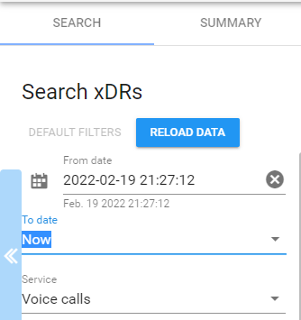
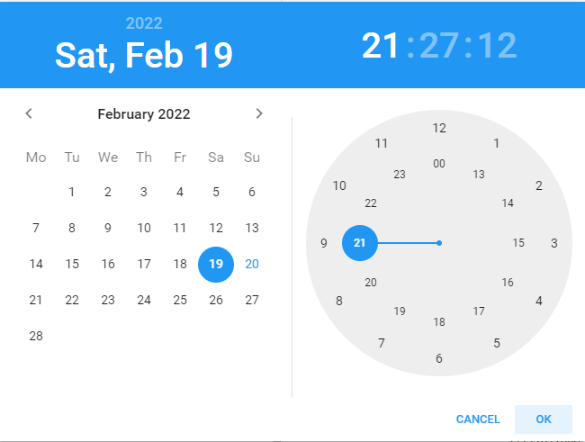
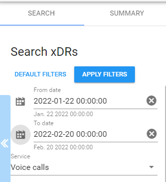
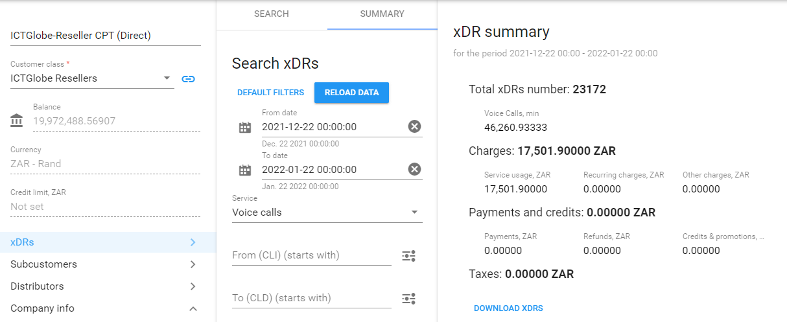
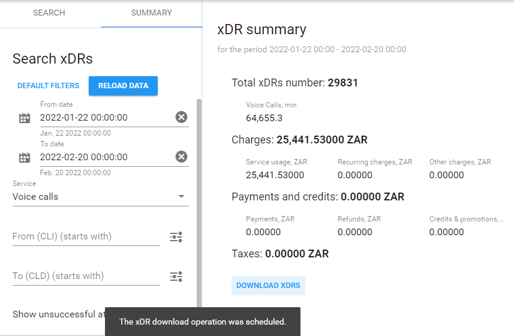
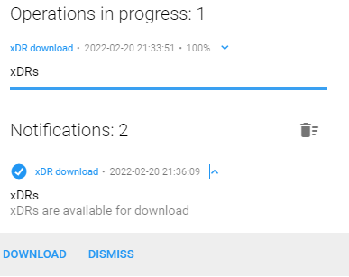
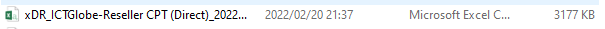

Reseller xDRs
How to view reseller xDRs
1. From the maind 'Dashboard' on Porta, scroll to 'Resellers', under 'Sales' then 'Sales agents', if not yet saved to your 'Favorites' panel.
2. Once on the reseller profile, first option at the bottom, select 'xDRs'.

3. You will now have the option to search the xDRs for certain period as specified.

4. Defining the time schedule for the required xDRs list:
- The 'From' and 'To' date can either be manualy typed, or
- The 'From' and 'To' date can be specified using the build in calendar option.
NOTE: For both options, remember to change the hour, minute and secondes to zero, as the time is by default the current time when performing the action.

5. Once your search filters was defined, you can select the apply 'Apply Filters', and then select the 'SUMMARY'option provided at the top.


NOTE: When searching xDRs, make sure of the resellers billing cycle as it might vary.
How to download reseller xDRs
1. Should the reseller be a 'Bill-on-Behalf' business partner, and in the case were rebates needs to be calculated, you might need to download the xDRs for a specific period of time.
2. From the 'Summary' page, at the bottom, you will find the 'DOWNLOAD XDRS' option.
Once the mentioned action was taken, Porta will schedule the operation for excecution.

3. To view the status of the task created, you can select the 'bell' icon on the top-left side of the page.
4. The 'xDR download' task should should be completed 100%, upon which, (by selecting the drop-down arrow), you will be able to download the file in .CSV file format, by clicking on the 'DOWNLOAD', option provided.

5. The xDR file downloaded, will now be available on your desktop computer as an Excel CSV file.

NOTE: xDRS can only be viewed for the past THREE months, any voice usage or other services longer back than three months will not be included in the xDRs generated.